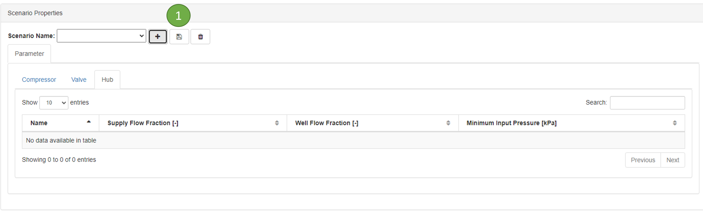

6. Setting the scenario
Scenario defined as a parameter of a component that can be changed over the time. For example the setpoint of CO2 flowrate
{kind=link}
The value of each column has this format: date value. Date format is day-month-year hour:minute
- Example:
1-jan-2022 100
1-jan-2022 01:00 150
When you have several values, then you can add by using comma
- Example:
1-jan-2022 100, 3-apr-2022 200
6.1. Create scenario
Click + button to create a new scenario
Fill in the scenario name
The default parameter list will be presented in the table if the network contains the component
{kind=link}
6.1.1. Compressor
Flow Setpoint. To determine the setpoint flowrate outgoing of the compressor.
6.1.2. Hub
Supply Flow Fraction. To determine the fraction of flow going into the hub. If there is multiple hubs, then the total fraction should be equal to 1
Minimum Input Pressure. To determine the minimum pressure at the inlet of the hub
Well flow Fraction. To determine the allocation of each well connected to the hub. If there are more than 1 wells, then the value should match with the number of wells. For example 3 wells: 1-jan-2022 0.3 0.4 0.3
6.2. Open an existing scenario
Select existing scenario from the drop down list
{kind=link}
6.3. Save a scenario
Click save button to save scenario
6.4. Delete a scenario
Click trash button to delete scenario
note: there is no popup window asking confirmation